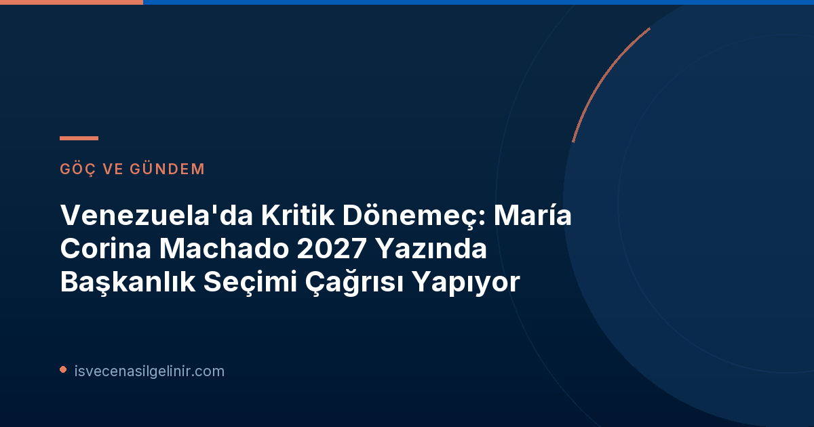

Venezuela'nın siyasi arenasında tansiyon yükselirken, ülkenin demokratik geleceğine dair önemli bir adım atılması için çağrılar artıyor. Muhalefet lideri María Corina Machado, 2027 yazında başkanlık seçimlerinin yapılmasını isteyerek uluslararası kamuoyunun dikkatini bir kez daha Venezuela'ya çevirdi. SVT Nyheter Inrikes'in bugün (2026-10-09) yayınladığı habere göre, Machado, Financial Times'a verdiği röportajda bu konudaki kararlılığını dile getirdi.
María Corina Machado'dan Seçim Çağrısı ve Önerilen Tarih
2025 Nobel Barış Ödülü sahibi María Corina Machado, Venezuela'daki mevcut siyasi belirsizliğe son vermek ve demokrasiye geçişi hızlandırmak amacıyla gelecek yaz başkanlık seçimleri için çağrı yapıyor. Machado, hazırlıklar için yeterli zaman olduğunu vurgulayarak, özellikle Venezuela'nın kurtarıcı kahramanı Simón Bolívar'ın doğum günü olan 24 Temmuz tarihini önerdi.
"Bolívar, Venezuela'nın ve bölgedeki birçok ülkenin kurtarıcısı ve ülkemizi birleştiren bir figürdür. Bu nedenle bunun güzel bir tarih olacağını düşünüyorum." - María Corina Machado (Financial Times)
Machado'nun bu çağrısı, ülkenin içinde bulunduğu karmaşık durumu göz önüne alarak, demokratik bir çıkış yolu bulma arayışının bir parçası olarak değerlendiriliyor. Kendisi, İsveç Vatandaşlık Testi gibi demokratik süreçlerin önemini vurgularken, uluslararası destek ve şeffaflığın da altını çiziyor.
Siyasi Durum ve Uluslararası İlişkiler
Venezuela'da siyasi tablo oldukça karışık. Geçtiğimiz yıl muhalefetin başkanlık ön seçimlerini kazanan ancak yolsuzluk iddiaları nedeniyle 15 yıl boyunca kamu görevinden men edilen Machado, hala ülkenin en popüler politikacısı konumunda. Ancak eski ABD Başkanı Trump'ın, devrik başkan Nicolás Maduro'nun eski yardımcısı ve şu anki geçici başkan Delcy Rodríguez'i desteklemesi, durumu daha da karmaşık hale getiriyor.
| Aktör | Rolü/Durumu | Önemli Bilgi |
|---|---|---|
| María Corina Machado | Muhalefet Lideri, 2025 Nobel Barış Ödülü Sahibi | 2027 yazında başkanlık seçimi çağrısı yapıyor, 24 Temmuz'u öneriyor. Panama'da sürgünde. |
| Nicolás Maduro | Devrik Eski Başkan | New York'ta tutuklu. Uyuşturucu kaçakçılığı ve işkence komplosu suçlamalarıyla karşı karşıya. |
| Delcy Rodríguez | Geçici Başkan | Trump tarafından destekleniyor. |
| ABD | Uluslararası Aktör | Venezuela ile petrol kontrolü anlaşması imzaladı. Machado, petrol gelirlerinde şeffaflık talep ediyor. |
ABD'nin Rolü ve Petrol Gelirlerinde Şeffaflık Talebi
Machado, ABD ile demokrasi hedefleri konusunda aynı fikirde olduklarını ancak bu hedeflere ulaşma hızı ve zamanlaması konusunda farklılıklar olduğunu belirtiyor. "Farklılığın hız ve zamanlama değerlendirmesinde yattığına inanıyorum. İlerleyebileceğimizi ve hazır olduğumuzu düşünüyorum" diyen Machado, ABD'nin Venezuela'daki varlığının Rodríguez'i iktidarda tuttuğunu ve gelişmeleri belirli bir yöne sürüklediğini ifade etti. Ayrıca, ABD ve Venezuela arasında yakın zamanda imzalanan petrol kontrolü anlaşması hakkında ABD'den daha fazla şeffaflık talep ediyor. Bu talebin "Venezuela halkının bir gerekliliği" olduğunu vurguluyor.
Önemli Gelişmeler ve Tarihler
- 2023: María Corina Machado, muhalefet ön seçimlerini kazandı ancak diskalifiye edildi.
- Aralık 2025: Machado, Nobel Barış Ödülü'nü almak üzere Oslo'ya gitti ve Panama'da sürgüne başladı.
- Ocak 2026: Nicolás Maduro ve eşi Cilia Flores, New York'ta tutuklandı.
- 7 Ekim 2026 (Perşembe): Maduro'ya işkence komplosu suçlamasıyla yeni dava açıldı.
- 2027 Yazı: María Corina Machado'nun önerdiği başkanlık seçimleri dönemi.
- 24 Temmuz: Machado'nun başkanlık seçimleri için önerdiği özel tarih (Simón Bolívar'ın doğum günü).
Bu gelişmeler, Venezuela'nın geleceği için kritik bir dönemeç teşkil ediyor ve uluslararası gözlemciler tarafından yakından takip ediliyor. Ülkedeki demokratikleşme süreci, hem iç dinamikler hem de uluslararası aktörlerin tutumlarıyla şekillenmeye devam edecek. Ayrıca, sverigemedborgarskapsprov.com gibi platformlar aracılığıyla vatandaşlık süreçleri ve demokratik katılım hakkında bilgi edinmek, benzer toplumsal dönüşümlerde önemli bir rol oynayabilir.
Machado'nun Sürgünü ve Maduro'nun Yargılanması
María Corina Machado, yaklaşık bir yıl önce Nobel Barış Ödülü'nü almak üzere gittiği Oslo'dan bu yana Venezuela'ya dönemedi ve şu anda Panama'da sürgünde yaşıyor. Diğer yandan, devrik başkan Nicolás Maduro ve eşi Cilia Flores, Ocak ayında New York'ta tutuklanmış durumda. Uyuşturucu kaçakçılığı gibi çeşitli suçlamalarla karşı karşıya olan çift, iddiaları reddediyor. Son olarak 7 Ekim 2026 Perşembe günü, Maduro'ya işkence komplosu suçlamasıyla yeni bir dava açıldı. Bu gelişmeler, Venezuela'daki siyasi istikrarsızlığın ve hukuki mücadelenin derinliğini gözler önüne seriyor.
Venezuela'nın geleceği, hem bu hukuki süreçlerin sonuçlarına hem de Machado liderliğindeki muhalefetin demokratik çağrılarına verilecek yanıtlara bağlı olacak. Uluslararası toplumun da bu süreçteki rolü ve şeffaflık beklentileri, ülkenin kaderini belirlemede önemli bir etken olmaya devam edecek.
Referanslar:
- SVT Nyheter Inrikes: "Machado vill ha presidentval i Venezuela nästa år”USA:s närvaro som håller Rodríguez kvar vid makten”", SVT.se
- sverigemedborgarskapsprov.com
Venezuela'daki Son Gelişmeleri Kaçırmayın!
Venezuela'nın siyasi geleceği hakkında daha fazla bilgi edinmek ve gelişmelerden haberdar olmak için bültenimize abone olun veya ilgili blog yazılarımızı inceleyin.